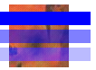

Практическое руководство. Рисование непрозрачных и полупрозрачных линий
При рисовании линии необходимо передать методу DrawLine класса Graphics объект Pen. Одним из параметров конструктора Pen является объект Color. Чтобы нарисовать непрозрачную линию, установите альфа-компонент цвета равным 255. Чтобы нарисовать полупрозрачную линию, установите значение альфа-компонента в диапазоне от 1 до 254.
При рисовании полупрозрачной линии на некотором фоне цвет линии смешивается с цветами фона. Альфа-компонент определяет результат смешивания цветов линии и фона. При близких к нулю значениях альфа цвета фона выделяются в большей степени, а при значениях альфа, близких к 255, в большей степени выделяется цвет линии.
Пример
В примере ниже рисуется растровое изображение, а затем рисуются три линии, использующие растровое изображение в качестве фона. Цвет первой линии имеет альфа-компонент, равный 255, поэтому она является непрозрачной. Для второй и третьей линий используется альфа-компонент, равный 128, поэтому они являются полупрозрачными и сквозь них можно видеть фоновое изображение. Оператор, устанавливающий значение свойства CompositingQuality, указывает, что смешивание цветов для третьей линии должно совмещаться с гамма-коррекцией.
Bitmap bitmap = new Bitmap("Texture1.jpg");
e.Graphics.DrawImage(bitmap, 10, 5, bitmap.Width, bitmap.Height);
Pen opaquePen = new Pen(Color.FromArgb(255, 0, 0, 255), 15);
Pen semiTransPen = new Pen(Color.FromArgb(128, 0, 0, 255), 15);
e.Graphics.DrawLine(opaquePen, 0, 20, 100, 20);
e.Graphics.DrawLine(semiTransPen, 0, 40, 100, 40);
e.Graphics.CompositingQuality = CompositingQuality.GammaCorrected;
e.Graphics.DrawLine(semiTransPen, 0, 60, 100, 60);
Warning
It looks like the sample you are looking for does not exist.
На следующем рисунке показан вывода следующего кода:

Компиляция кода
Предыдущий пример предназначен для работы с Windows Forms и требует PaintEventArgse, который является параметром Paint обработчик событий.